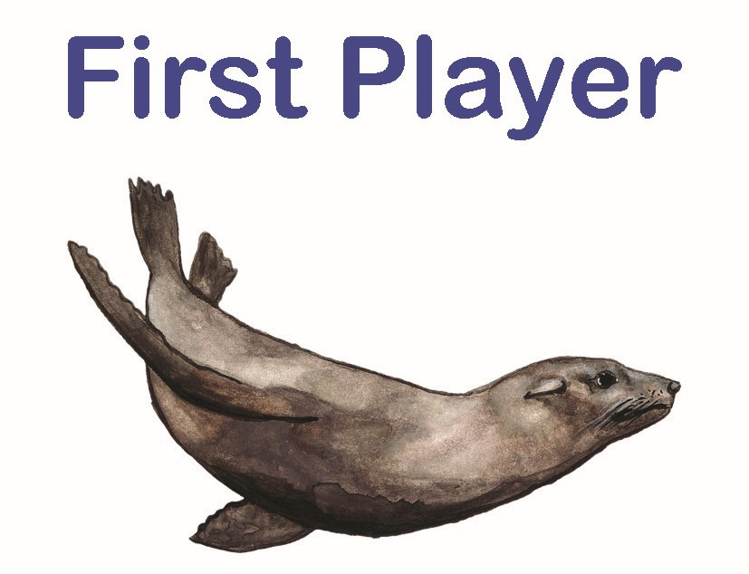

Game rules
We’ve made a short video explaining how to play the game. Full instructions for setup, gameplay, round end, and game end are detailed below.
Setup
Shuffle all fish cards and wildcards together into the gameplay deck and place in the middle of the play area. This is the gameplay deck.
Find the “End of game card”
Identify a large clear space in front of each player as their fishing spot. Deal each player 5 starting cards from the gameplay deck. At the start of the game each player places up to 3 fish from their hand into their fishing site: one as a big fish, one as a medium fish and one as a juvenile fish. If the player does not have 3 fish in their hand they will place fewer cards (e.g. one big and one medium, or only one big fish).
From the gameplay deck flip over cards equal to the number of players +2 and place them in the middle next to the gameplay deck. These are the face-up cards. Give each player an esky card, this is placed below the fishing hole. Remember fish placed in the esky must maintain their orientation (juvenile, medium, big).

Chose the first player for the first round. It could be the one to most recently have caught a fish.
Gameplay
During the round each player follows the steps on the turn order card.
Step 1
Draw new cards equal to the number of large fish you have in your fishing hole, up to a maximum of 5 cards. These cards can be drawn from the face-up pile or the gameplay deck. This means that a player can either chose some unknown card or play safe and only take cards that they know (from the face-up cards). Check to see if you have any pink wild cards with a clam shell in your fishing hole (not in your hands) - they allow you to draw more cards.
Step 2
Spawn fish (place them face up in your fishing site) from your hand as a larval fish. Check to see if you have any red wild cards with a dolphin in your fishing site (not in your hands) – they allow you to spawn more fish.
Step 3
Grow fish to their next stage by rotating them from larval to juvenile, from juvenile to medium, or from medium and to big). You can grow a fish to the next stage for every big fish present in your fishing site, i.e. if you have two big fish you may grow to smaller fish to their next stage. Fish can only grow by one stage in each turn (larval to juvenile, medium to large, etc), i.e. larval juvenile cannot become big fish in one round even if you have three big fish and can have three “growth steps”. Check to see if you have any green wild cards with a starfish in your fishing hole (not in your hands) – they allow you to grow more fish.
Step 4
If you like, catch ONE fish from your fishing site. Do this by placing it in your esky in the same orientation as you caught it. Caught large fish no longer count as big fish in your fishing site. Check to see if you have any orange wild cards with a fisher in your fishing site (not in your hands) – they allow you to catch more fish (or shellfish). Remember, it is important to keep catching fish, because once the game ends the player who has the largest number of points from the caught fish will win. Catching big fish will give you more points, but will reduce the number of cards you can draw, the number of fish you can spawn or the number of growth steps you can have.
Step 5
If you like, play ONE wild card from your hand. Wild cards come in multiple colours that do different things. Coloured cards are played (placed) into your fishing site to give you extra abilities or improve your site. They are permanent and apply each round. Black wildcards give one-off effects and must be discarded once they are played.

Round end
After each player has had one turn, follow the round end steps to complete the round.
Step 1
Reveal the next round end event card and follow its directions. If this is a round 5 or more, the round end card might also be the end of the game card.
Step 2
Discard cards in your hand so no player has more than 7 cards in hand. This rarely needed, but helps maintain the balance of the game.
Step 3
Reset the face-up cards for the centre by moving them to the used card pile (face-down) and setting up new face-up cards from the pile (number of players + 2).
Step 4
Rotate the first player by passing the first player card clockwise. This ensures that the first player gets the choice of new face-up cards equally.
Game end
The game ends randomly, once the flipped round end card is the “End of the game” card. This should happen after the end of 5 rounds or more. Now count your points.
Step 1
Making sure you keep the orientation correct for each fish in your esky, count the points displayed next to the life stage of each fish in your esky.
Step 2
Each larval, juvenile and medium fish remaining in your fishing site give you 1 point. Add these points to your total score. This encourages to keep a healthy ecosystem.
Step 3
Each big fish remaining alive in your fishing site give you 2 points. Add these points to your total score. This encourages to keep a healthy ecosystem and large fish for the future.
The winner is the player with the most points!